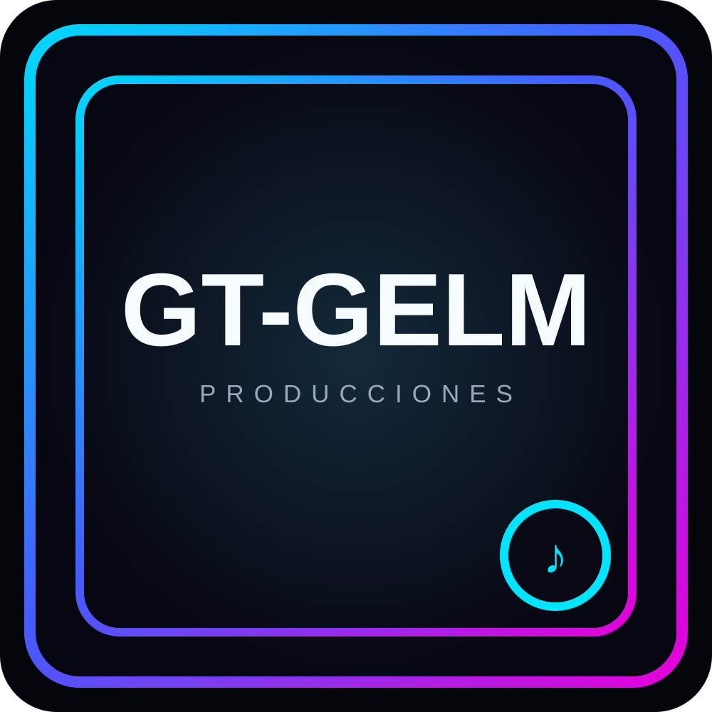

● GT-GELM
00:00
00:00
TEXTO
Letra de la canción
La letra aparecerá aquí cuando exista el archivo correspondiente.
CANAL
GT-GELM en YouTube
El reproductor de audio vive aquí mismo. YouTube queda como complemento, no como dependencia del audio.